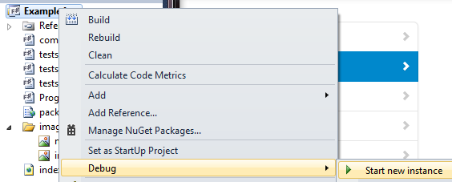

canopy - f#rictionless web testing
The canopy library can be installed from NuGet:
PM> Install-Package canopy
canopy is a web testing framework with one goal in mind, make UI testing simple:
Solid stabilization layer built on top of Selenium. Death to "brittle, quirky, UI tests".
Quick to learn. Even if you've never done UI Automation, and don't know F#.
Clean, concise API.
MIT License.
Getting Started
1. Create a new F# console application

2. Set target framework to .NET Framework 4

3. Install canopy via Nuget

4. Paste the following code into Program.fs
1: 2: 3: 4: 5: 6: 7: 8: 9: 10: 11: 12: 13: 14: 15: 16: 17: 18: 19: 20: 21: 22: 23: 24: 25: 26: 27: 28: 29: 30: 31: 32: 33: 34: 35: 36: 37: 38: 39: |
//these are similar to C# using statements open canopy open runner open System //start an instance of the firefox browser start firefox //this is how you define a test "taking canopy for a spin" &&& fun _ -> //this is an F# function body, it's whitespace enforced //go to url url "http://lefthandedgoat.github.io/canopy/testpages/" //assert that the element with an id of 'welcome' has //the text 'Welcome' "#welcome" == "Welcome" //assert that the element with an id of 'firstName' has the value 'John' "#firstName" == "John" //change the value of element with //an id of 'firstName' to 'Something Else' "#firstName" << "Something Else" //verify another element's value, click a button, //verify the element is updated "#button_clicked" == "button not clicked" click "#button" "#button_clicked" == "button clicked" //run all tests run() printfn "press [enter] to exit" System.Console.ReadLine() |> ignore quit() |
5. Run
6. Explore the rest of canopy's API
- Actions: documentation of everything you can do on a page
- Assertions: all the ways you can verify what's on the page is correct
- Testing: different ways to orchestrate tests and troubleshoot issues with a page
- Reporting: different ways to output the results of your test suite
namespace System
val printfn : format:Printf.TextWriterFormat<'T> -> 'T
Full name: Microsoft.FSharp.Core.ExtraTopLevelOperators.printfn
Full name: Microsoft.FSharp.Core.ExtraTopLevelOperators.printfn
type Console =
static member BackgroundColor : ConsoleColor with get, set
static member Beep : unit -> unit + 1 overload
static member BufferHeight : int with get, set
static member BufferWidth : int with get, set
static member CapsLock : bool
static member Clear : unit -> unit
static member CursorLeft : int with get, set
static member CursorSize : int with get, set
static member CursorTop : int with get, set
static member CursorVisible : bool with get, set
...
Full name: System.Console
static member BackgroundColor : ConsoleColor with get, set
static member Beep : unit -> unit + 1 overload
static member BufferHeight : int with get, set
static member BufferWidth : int with get, set
static member CapsLock : bool
static member Clear : unit -> unit
static member CursorLeft : int with get, set
static member CursorSize : int with get, set
static member CursorTop : int with get, set
static member CursorVisible : bool with get, set
...
Full name: System.Console
Console.ReadLine() : string
val ignore : value:'T -> unit
Full name: Microsoft.FSharp.Core.Operators.ignore
Full name: Microsoft.FSharp.Core.Operators.ignore